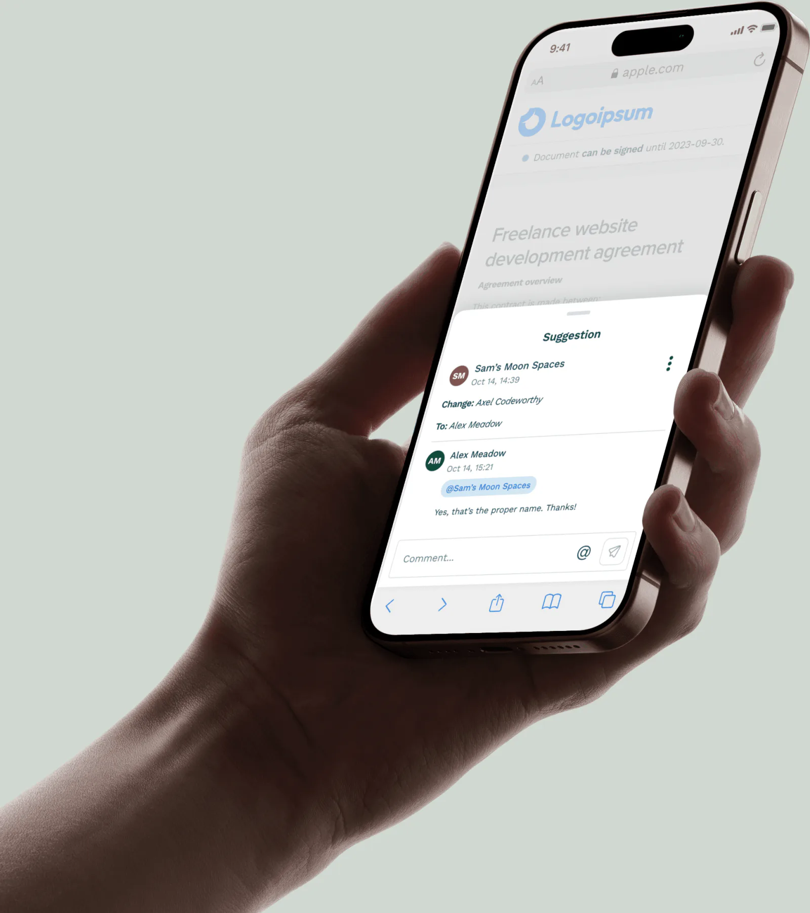
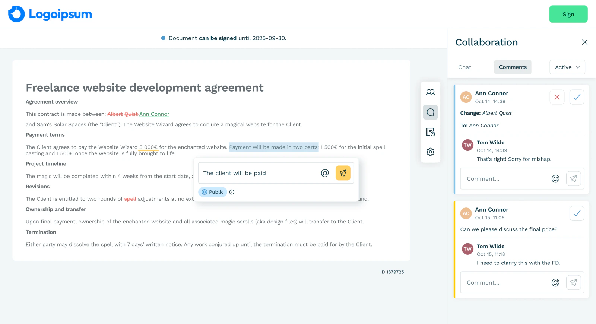
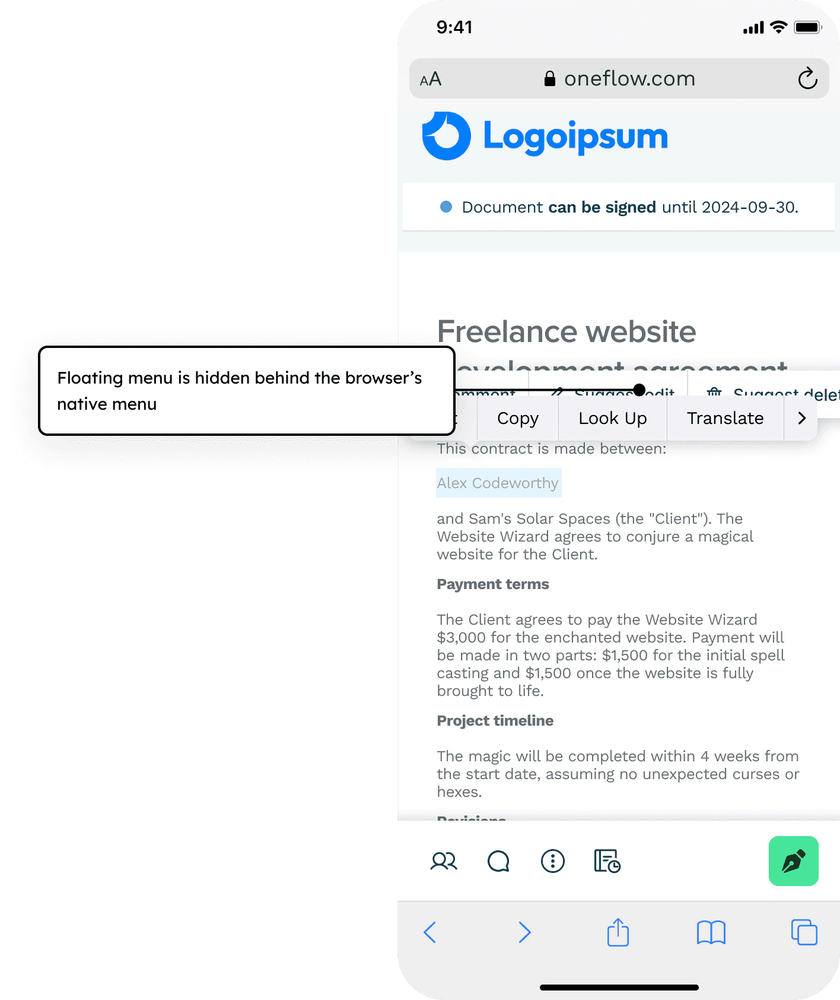
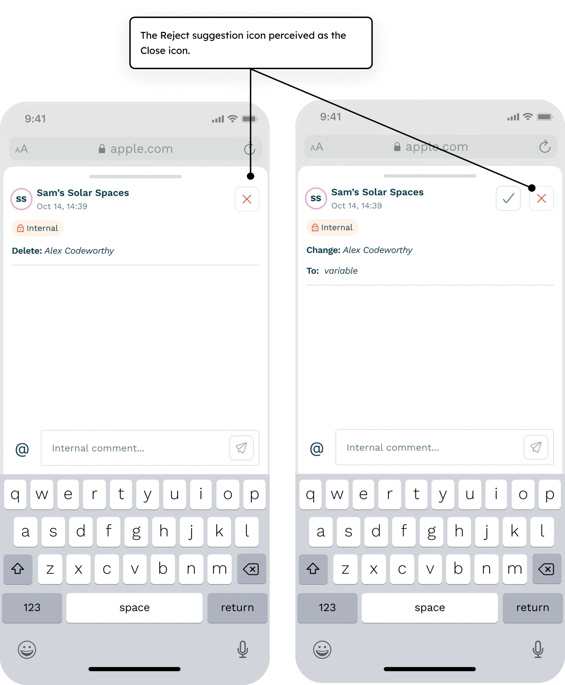
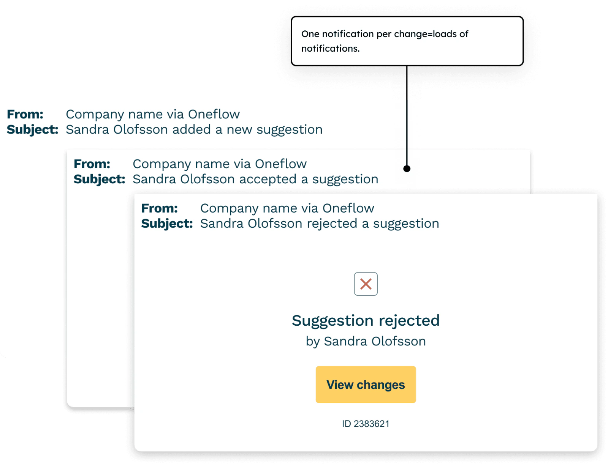
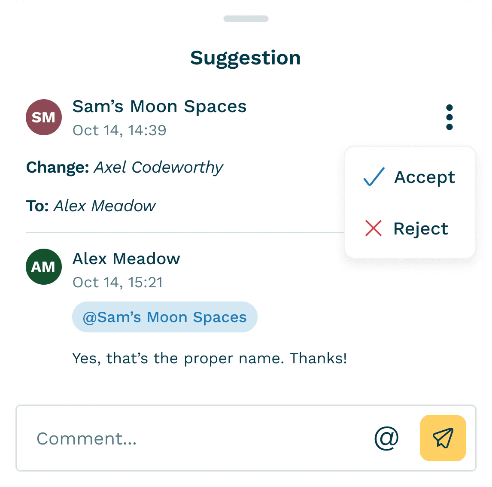
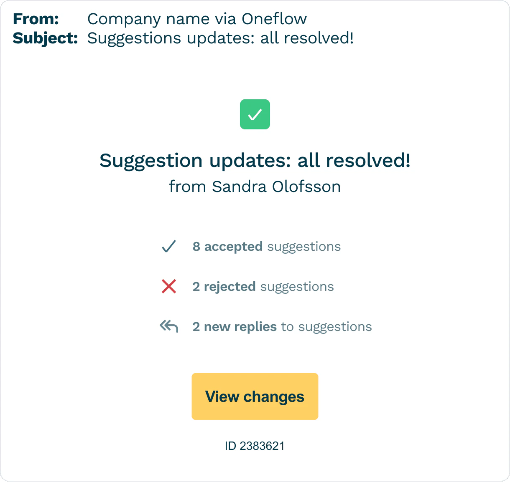
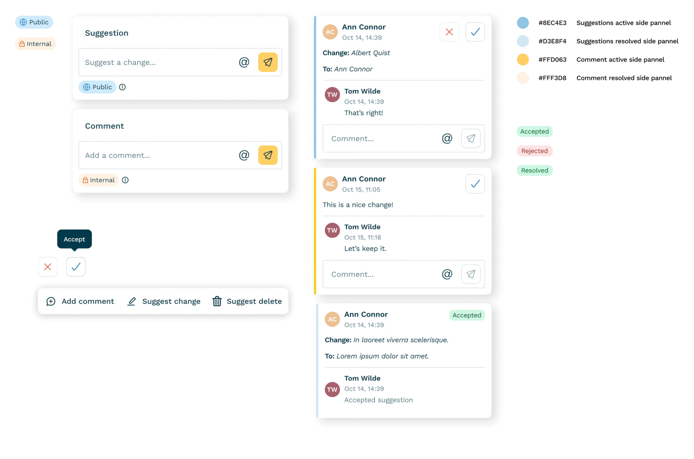

Real-time contract collaboration
Reduced contract collaboration time by 29% and increased product stickiness.
3-day replies became 1.5-day replies


Context
Oneflow is a contract platform for B2B teams. Users drafted and signed contracts inside Oneflow but switched to Google Docs, Word, or email to propose edits, causing version drift and slow collaboration.
Problem
Research
- Conducted and analyzed 10+ customer interviews + support tickets
- Feedback scattered across channels, causing version drift
Root causes
- No native way to propose edits inside Oneflow
- Teams used Google Docs/Word for reviews
Fragmented workflow
My approach
- 01Mapped flowsMapped collaboration flows to identify friction points
- 02Inline SuggestionsDesigned inline Suggestions cross-platform
- 03Bulk notificationsCreated bulk notifications system to reduce noise and group relevant updates
- 04Onboarding flowsTested and iterated on 4 versions with enterprise users based on the onboarding flow data
Results and impact
The process
Working with constraints
No "suggestion mode" possible
I faced one major constraint that shaped my design decisions:
Our architecture didn't support a suggestion-layer. A "true" Suggestion mode wasn't technically feasible with our system.
Impact: Spending months reinventing a "true" Suggestions mode was in no way sustainable, nor scalable. We risked losing the UK customers for whom the feature was a deal breaker.
Key design challenges
When prototyping the solution, I iterated, tested, and analyzed user feedback. I identified and solved three critical usability issues that were blocking successful collaboration.
Mobile toolbar blocker
On mobile devices, our floating toolbar was completely inaccessible.
Impact: 95% mobile session abandonment rate.


Action hierarchy confusion
8 out of 10 users clicked "Resolve" thinking it would close their suggestion. Instead, it marked feedback as resolved and removed it from view.
Impact: 80% incomplete collaboration review sessions.
Notification overload
Initial system sent emails for every single suggestion, resulting in important notifications being spammed or ignored.
Impact: 3.2 days average response time.

Design solutions
After rounds of validation, here's what I delivered:
Mobile-first workflow
I redesigned the floating approach entirely, collaborating with engineering to create a sliding toolbar and reusable drawer component that works seamlessly across mobile devices.
Result: Research showed 30% of contract reviews happened on mobile (often during commutes), making mobile optimization critical.
Contextual action system
I redesigned with two-step confirmation: click the three-dot menu to reveal options, then choose "Accept" or "Reject".
Result: User testing revealed workflow clarity mattered more than UI simplicity — reducing cognitive load increased completion rates by 32%.


Smart notification system
We implemented batched notifications with 7-minute intervals, grouping multiple suggestions into digestible updates that reduced email volume by 78%.
Result: Users received fewer, more meaningful notifications about contract changes.
“The new suggestion flow has changed how we work with external counsel. Instead of version chaos over email, we now have a single source of truth with tracked changes.”
— Customer in a support callDesign system components
I created reusable components to ensure consistency across the collaboration experience, including notification patterns, action states, and mobile-responsive layouts that became foundational for future product development.

Learnings and reflections
Didn't work
- Many enterprise accounts had Suggestions disabled by default, hurting early discoverability
Surprised me
- Users instantly understood Suggestions once they saw one: no learning curve
Would do differently
- Address legacy templates and default states earlier
- Validate mobile interactions sooner
More projects